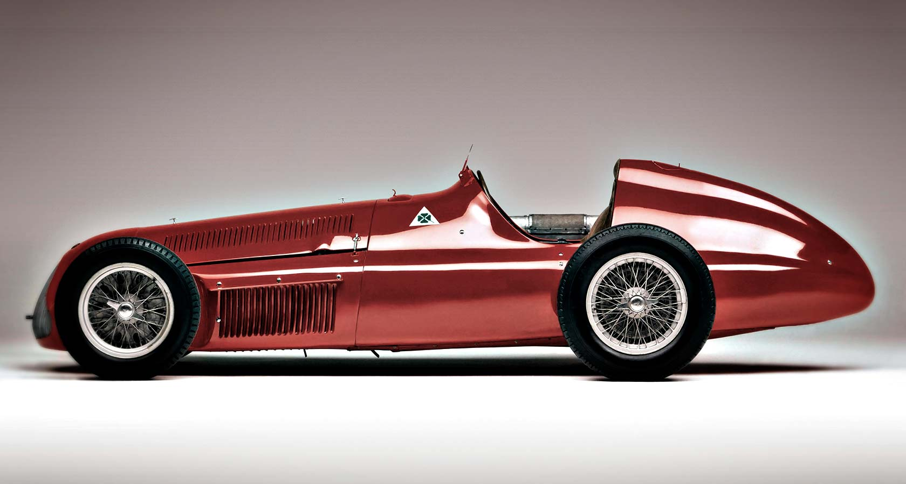
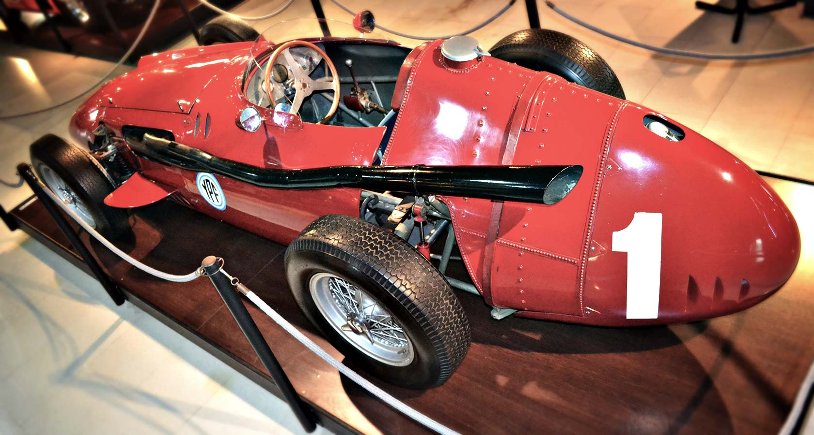
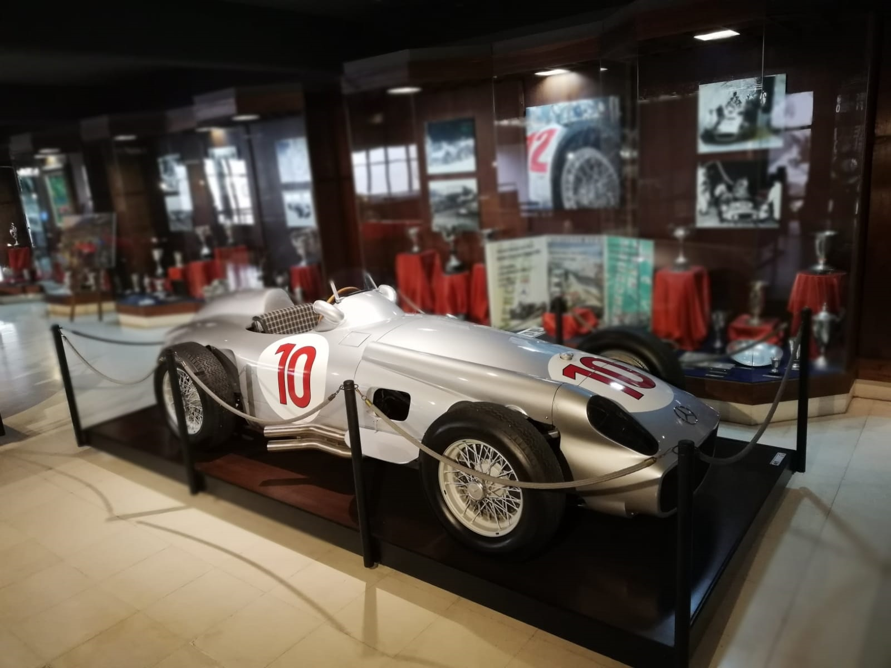
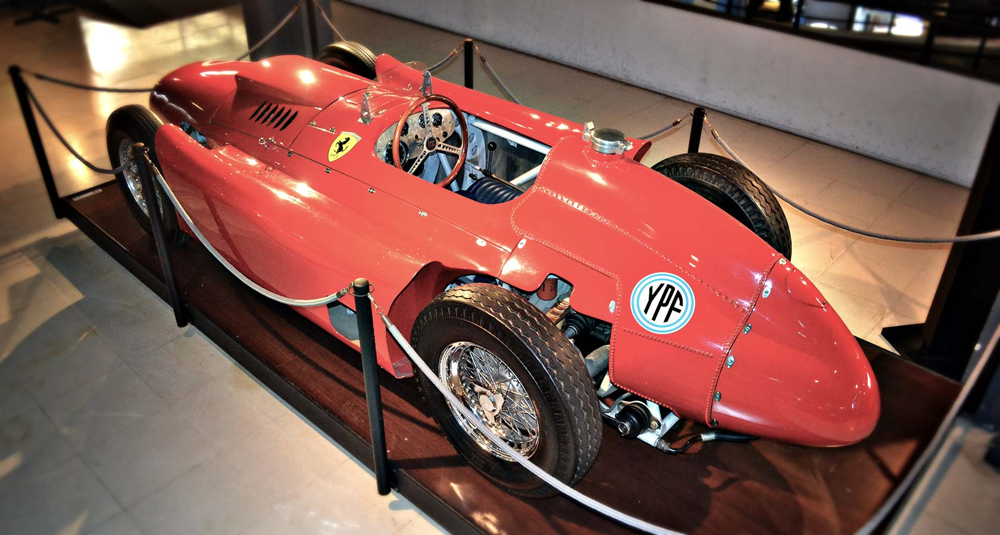

Alfa Romeo 159 (“Alfetta”)
El Alfa Romeo 159, conocido como la
“Alfetta”, fue un
monoplazo de gran premio con un motor de 1,5 litros, 8 cilindros en línea que desarrollaba una potencia de
425 cv, merced a ser turboalimentado por 2 compresores, toda una novedad para su época y de allí el tremendo
éxito que tuvo la Alfetta. Utilizó una caja de cambios manual de 4 marchas, frenos a tambor en las 4 ruedas
y desarrolló una velocidad máxima de 305 km/h
Juan Manuel corrió con la Alfetta durante los años 1950 y
1951, saliendo subcampeón y campeón, respectivamente, hasta el posterior retiro de Alfa Romeo de la Máxima.
Maserati 250F
Con este monoplaza Juan Manuel corrió en 1952,
1953,
parte de 1954 y en 1957. Cosechó el campeonato de la temporada 1957 y 2 victorias del campeonato de 1954, el
que luego terminó ganando al volante de la Scuderia Ferrari.
Se trataba de un monoplaza con un motor de 6
cilindros en línea y 2.5 litros de cilindrada, desarrollando una potencia de 275 CV a 8000 rpm. Ese motor
era aspirado, alimentado por 3 carburadores Weber de doble boca. Contaba con caja de cambios manual de 4 y 5
marchas (1954 y 1957 respectivamente), a la derecha del piloto, frenos a tambor en las 4 ruedas con llantas
de 16 o 17 pulgadas, según la temporada y el circuito, y cubiertas Pirelli de 5,5 adelante y 7,0 atrás.
Pesaba 630 kgs y desarrollaba una velocidad máxima de 300 km/h.


Mercedes-Benz W196
La “flecha de plata” fue considerada por el
mismísimo Fangio como el auto de carreras perfecto. Montó un motor de 2,5 litros con 8 cilindros en línea
alimentado por inyección directa, una revolución para las motorizaciones de su tiempo. Desarrollaba una
potencia de 256 HP a 8260 rpm, alcanzando una velocidad máxima de 315 km/h.
Nuestro as corrió con este
monoplaza 6 de las 8 carreras de 1954 (las 2 restantes las corrió con Maserati) y todos los grandes premios
del año 1955. En ambas temporadas obtuvo sendos campeonatos, con rendimientos muy por encima del nivel de
sus competidores.
Lancia Ferrari D-50
La Ferrari con la que corrió Fangio durante
el
año 1956 montó un propulsor de 2,5 litros, con 8 cilindros en “V” que desarrollaba una potencia de 275 HP a
8000 rpm, alimentándose por 4 carburadores Solex. Contaba con una caja de cambios de 5 marchas manual, a la
derecha del piloto. Su sistema de frenado era a tambor en las 4 ruedas y montaba llantas de 16 pulgadas
adelante y 17 atrás, con cubiertas Engelbert de 5,5 delanteras y 7,0 traseras. Su velocidad máxima era 300
km/h.
Si bien esta maravilla roja no era muy consistente, Juan Manuel se las arregló para conseguir 3
grandes premios y 2 podios, haciéndose acreedor de ese modo al título de campeón de la temporada 1956, la
única que corrió para la escudería del cavallino rampante.
